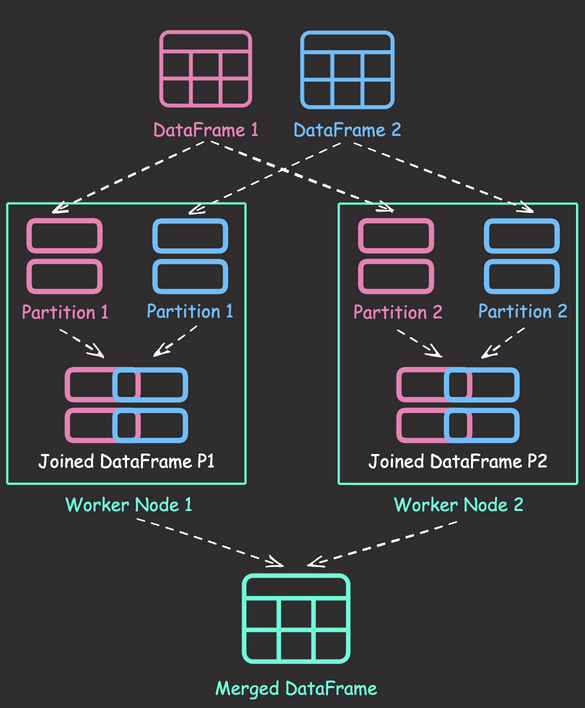

6.14. 3 Powerful Ways to Create PySpark DataFrames#
from pyspark.sql import SparkSession
spark = SparkSession.builder.getOrCreate()
Here are the three powerful methods to create DataFrames in PySpark, each with its own advantages:
Using StructType and StructField:
from pyspark.sql.types import StructType, StructField, StringType, IntegerType
data = [("Alice", 25), ("Bob", 30), ("Charlie", 35)]
schema = StructType(
[StructField("name", StringType(), True), StructField("age", IntegerType(), True)]
)
df = spark.createDataFrame(data, schema)
df.show()
+-------+---+
| name|age|
+-------+---+
| Alice| 25|
| Bob| 30|
|Charlie| 35|
+-------+---+
Pros:
Explicit schema definition, giving you full control over data types
Helps catch data type mismatches early
Ideal when you need to ensure data consistency and type safety
Can improve performance by avoiding schema inference
Using Row objects:
from pyspark.sql import Row
data = [Row(name="Alice", age=25), Row(name="Bob", age=30), Row(name="Charlie", age=35)]
df = spark.createDataFrame(data)
df.show()
+-------+---+
| name|age|
+-------+---+
| Alice| 25|
| Bob| 30|
|Charlie| 35|
+-------+---+
Pros:
More Pythonic approach, leveraging named tuples
Good for scenarios where data structure might evolve
From Pandas DataFrame:
import pandas as pd
pandas_df = pd.DataFrame({"name": ["Alice", "Bob", "Charlie"], "age": [25, 30, 35]})
df = spark.createDataFrame(pandas_df)
df.show()
+-------+---+
| name|age|
+-------+---+
| Alice| 25|
| Bob| 30|
|Charlie| 35|
+-------+---+
Pros:
Familiar to data scientists who frequently use Pandas
6.15. Distributed Data Joining with Shuffle Joins in PySpark#
Show code cell content
!pip install 'pyspark[sql]'
Shuffle joins in PySpark distribute data across worker nodes, enabling parallel processing and improving performance compared to single-node joins. By dividing data into partitions and joining each partition simultaneously, shuffle joins can handle large datasets efficiently.

Here’s an example of performing a shuffle join in PySpark:
from pyspark.sql import SparkSession
spark = SparkSession.builder.getOrCreate()
employees = spark.createDataFrame(
[(1, "John", "Sales"), (2, "Jane", "Marketing"), (3, "Bob", "Engineering")],
["id", "name", "department"],
)
salaries = spark.createDataFrame([(1, 5000), (2, 6000), (4, 7000)], ["id", "salary"])
# Perform an inner join using the join key "id"
joined_df = employees.join(salaries, "id", "inner")
joined_df.show()
[Stage 7:> (0 + 8) / 8]
+---+----+----------+------+
| id|name|department|salary|
+---+----+----------+------+
| 1|John| Sales| 5000|
| 2|Jane| Marketing| 6000|
+---+----+----------+------+
In this example, PySpark performs a shuffle join behind the scenes to combine the two DataFrames. The process involves partitioning the data based on the join key (“id”), shuffling the partitions across the worker nodes, performing local joins on each worker node, and finally merging the results.
6.16. PySpark DataFrame Transformations: select vs withColumn#
Show code cell content
!pip install 'pyspark[sql]'
Show code cell content
from pyspark.sql import SparkSession
spark = SparkSession.builder.getOrCreate()
Setting default log level to "WARN".
To adjust logging level use sc.setLogLevel(newLevel). For SparkR, use setLogLevel(newLevel).
24/09/02 06:01:00 WARN NativeCodeLoader: Unable to load native-hadoop library for your platform... using builtin-java classes where applicable
PySpark’s select and withColumn both can be used to add or modify existing columns. However, their behavior are different.
To demonstrate this, let’s start with creating a sample DataFrame:
from pyspark.sql.functions import col, upper
data = [
("Alice", 28, "New York"),
("Bob", 35, "San Francisco"),
]
df = spark.createDataFrame(data, ["name", "age", "city"])
df.show()
+-----+---+-------------+
| name|age| city|
+-----+---+-------------+
|Alice| 28| New York|
| Bob| 35|San Francisco|
+-----+---+-------------+
select only keeps specified columns.
df_select = df.select(upper(col("city")).alias("upper_city"))
df_select.show()
+-------------+
| upper_city|
+-------------+
| NEW YORK|
|SAN FRANCISCO|
+-------------+
withColumn retains all original columns plus the new/modified one.
df_withColumn = df.withColumn("upper_city", upper(col("city")))
df_withColumn.show()
+-----+---+-------------+-------------+
| name|age| city| upper_city|
+-----+---+-------------+-------------+
|Alice| 28| New York| NEW YORK|
| Bob| 35|San Francisco|SAN FRANCISCO|
+-----+---+-------------+-------------+
6.17. Spark DataFrame: Avoid Out-of-Memory Errors with Lazy Evaluation#
Show code cell content
!pip install 'pyspark[sql]'
Retrieving all rows from a large dataset into memory can cause out-of-memory errors. When creating a Spark DataFrame, computations are not executed until the collect() method is invoked. This allows you to reduce the size of the DataFrame through operations such as filtering or aggregating before bringing them into memory.
As a result, you can manage memory usage more efficiently and avoid unnecessary computations.
from pyspark.sql import SparkSession
spark = SparkSession.builder.getOrCreate()
df = spark.read.parquet("test_data.parquet")
df.show(5)
+---+----+----+
|cat|val1|val2|
+---+----+----+
| b| 0| 34|
| a| 58| 12|
| c| 24| 72|
| a| 20| 58|
| b| 13| 17|
+---+----+----+
only showing top 5 rows
processed_df = df.filter(df["val1"] >= 50).groupBy("cat").agg({"val2": "mean"})
processed_df.collect()
[Row(cat='c', avg(val2)=49.54095055783208),
Row(cat='b', avg(val2)=49.46593810642427),
Row(cat='a', avg(val2)=49.52092805080465)]
6.18. Pandas-Friendly Big Data Processing with Spark#
!pip install "pyspark[pandas_on_spark]"
Spark enables scaling of your pandas workloads across multiple nodes. However, learning PySpark syntax can be daunting for pandas users.
Pandas API on Spark enables leveraging Spark’s capabilities for big data while retaining a familiar pandas-like syntax.
The following code compares the syntax between PySpark and the Pandas API on Spark.
import warnings
warnings.simplefilter(action="ignore", category=FutureWarning)
Pandas API on Spark:
import numpy as np
import pyspark.pandas as ps
psdf = ps.DataFrame(
{
"A": ["foo", "bar", "foo"],
"B": ["one", "one", "two"],
"C": [0.1, 0.3, 0.5],
"D": [0.2, 0.4, 0.6],
}
)
psdf.sort_values(by="B")
| A | B | C | D | |
|---|---|---|---|---|
| 0 | foo | one | 0.1 | 0.2 |
| 1 | bar | one | 0.3 | 0.4 |
| 2 | foo | two | 0.5 | 0.6 |
psdf.groupby("A").sum()
| C | D | |
|---|---|---|
| A | ||
| foo | 0.6 | 0.8 |
| bar | 0.3 | 0.4 |
psdf.query("C > 0.4")
| A | B | C | D | |
|---|---|---|---|---|
| 2 | foo | two | 0.5 | 0.6 |
psdf[["C", "D"]].abs()
| C | D | |
|---|---|---|
| 0 | 0.1 | 0.2 |
| 1 | 0.3 | 0.4 |
| 2 | 0.5 | 0.6 |
PySpark:
from pyspark.sql.functions import col
from pyspark.sql.functions import abs
from pyspark.sql import SparkSession
spark = SparkSession.builder.getOrCreate()
spark_data = spark.createDataFrame(
[
("foo", "one", 0.1, 0.2),
("bar", "one", 0.3, 0.4),
("foo", "two", 0.5, 0.6),
],
["A", "B", "C", "D"],
)
spark_data.sort(col("B")).show()
+---+---+---+---+
| A| B| C| D|
+---+---+---+---+
|foo|one|0.1|0.2|
|bar|one|0.3|0.4|
|foo|two|0.5|0.6|
+---+---+---+---+
spark_data.groupBy("A").sum().show()
[Stage 25:> (0 + 8) / 8]
+---+------+------+
| A|sum(C)|sum(D)|
+---+------+------+
|foo| 0.6| 0.8|
|bar| 0.3| 0.4|
+---+------+------+
spark_data.filter(col("C") > 0.4).show()
+---+---+---+---+
| A| B| C| D|
+---+---+---+---+
|foo|two|0.5|0.6|
+---+---+---+---+
spark_data.select(abs(spark_data["C"]).alias("C"), abs(spark_data["D"]).alias("D"))
DataFrame[C: double, D: double]
6.19. Writing Safer and Cleaner Spark SQL with PySpark’s Parameterized Queries#
Show code cell content
!pip install "pyspark[sql]"
from pyspark.sql import SparkSession
import pandas as pd
from datetime import date, timedelta
spark = SparkSession.builder.getOrCreate()
When working with Spark SQL queries, using regular Python string interpolation can lead to security vulnerabilities and require extra steps like creating temporary views. PySpark offers a better solution with parameterized queries, which:
Protect against SQL injection
Allow using DataFrame objects directly in queries
Automatically handle date formatting
Provide a more expressive way to write SQL queries
Let’s compare the traditional approach with parameterized queries:
# Create a Spark DataFrame
item_price_pandas = pd.DataFrame(
{
"item_id": [1, 2, 3, 4],
"price": [4, 2, 5, 1],
"transaction_date": [
date(2023, 1, 15),
date(2023, 2, 1),
date(2023, 3, 10),
date(2023, 4, 22),
],
}
)
item_price = spark.createDataFrame(item_price_pandas)
item_price.show()
+-------+-----+----------------+
|item_id|price|transaction_date|
+-------+-----+----------------+
| 1| 4| 2023-01-15|
| 2| 2| 2023-02-01|
| 3| 5| 2023-03-10|
| 4| 1| 2023-04-22|
+-------+-----+----------------+
Traditional approach (less secure, requires temp view and wrapping the date in quotes):
item_price.createOrReplaceTempView("item_price_view")
transaction_date = "2023-02-15"
query = f"""SELECT *
FROM item_price_view
WHERE transaction_date > '{transaction_date}'
"""
spark.sql(query).show()
+-------+-----+----------------+
|item_id|price|transaction_date|
+-------+-----+----------------+
| 3| 5| 2023-03-10|
| 4| 1| 2023-04-22|
+-------+-----+----------------+
PySpark’s parameterized query approach (secure, no temp view and quotes needed):
query = """SELECT *
FROM {item_price}
WHERE transaction_date > {transaction_date}
"""
spark.sql(query, item_price=item_price, transaction_date=transaction_date).show()
+-------+-----+----------------+
|item_id|price|transaction_date|
+-------+-----+----------------+
| 3| 5| 2023-03-10|
| 4| 1| 2023-04-22|
+-------+-----+----------------+
This method allows for easy parameter substitution and direct use of DataFrames, making your Spark SQL queries both safer and more convenient to write and maintain.
6.20. Working with Arrays Made Easier in Spark 3.5#
Show code cell content
!pip install "pyspark[sql]"
Spark 3.5 added new array helper functions that simplify the process of working with array data. Below are a few examples showcasing these new array functions.
Show code cell content
from pyspark.sql import SparkSession
spark = SparkSession.builder.getOrCreate()
Show code cell source
from pyspark.sql import Row
df = spark.createDataFrame(
[
Row(customer="Alex", orders=["🍋", "🍋"]),
Row(customer="Bob", orders=["🍊"]),
]
)
df.show()
+--------+--------+
|customer| orders|
+--------+--------+
| Alex|[🍋, 🍋]|
| Bob| [🍊]|
+--------+--------+
from pyspark.sql.functions import (
col,
array_append,
array_prepend,
array_contains,
array_distinct,
)
df.withColumn("orders", array_append(col("orders"), "🍇")).show()
+--------+------------+
|customer| orders|
+--------+------------+
| Alex|[🍋, 🍋, 🍇]|
| Bob| [🍊, 🍇]|
+--------+------------+
df.withColumn("orders", array_prepend(col("orders"), "🍇")).show()
+--------+------------+
|customer| orders|
+--------+------------+
| Alex|[🍇, 🍋, 🍋]|
| Bob| [🍇, 🍊]|
+--------+------------+
df.withColumn("orders", array_distinct(col("orders"))).show()
+--------+------+
|customer|orders|
+--------+------+
| Alex| [🍋]|
| Bob| [🍊]|
+--------+------+
df.withColumn("has_🍋", array_contains(col("orders"), "🍋")).show()
+--------+--------+------+
|customer| orders|has_🍋|
+--------+--------+------+
| Alex|[🍋, 🍋]| true|
| Bob| [🍊]| false|
+--------+--------+------+
6.21. Simplify Complex SQL Queries with PySpark UDFs#
Show code cell content
!pip install "pyspark[sql]"
Show code cell content
from pyspark.sql import SparkSession
spark = SparkSession.builder.getOrCreate()
SQL queries can often become complex and challenging to comprehend.
df = spark.createDataFrame(
[(1, "John Doe"), (2, "Jane Smith"), (3, "Bob Johnson")], ["id", "name"]
)
# Register the DataFrame as a temporary table or view
df.createOrReplaceTempView("df")
# Complex SQL query
spark.sql(
"""
SELECT id, CONCAT(UPPER(SUBSTRING(name, 1, 1)), LOWER(SUBSTRING(name, 2))) AS modified_name
FROM df
"""
).show()
+---+-------------+
| id|modified_name|
+---+-------------+
| 1| John doe|
| 2| Jane smith|
| 3| Bob johnson|
+---+-------------+
Using PySpark UDFs simplifies complex SQL queries by encapsulating complex operations into a single function call, resulting in cleaner queries. UDFs also allow for the reuse of complex logic across different queries.
In the code example below, we define a UDF called modify_name that converts the name to uppercase.
from pyspark.sql.functions import udf
from pyspark.sql.types import StringType
# Define a UDF to modify the name
@udf(returnType=StringType())
def modify_name(name):
return name[0].upper() + name[1:].lower()
spark.udf.register("modify_name", modify_name)
# Apply the UDF in the spark.sql query
df.createOrReplaceTempView("df")
spark.sql(
"""
SELECT id, modify_name(name) AS modified_name
FROM df
"""
).show()
24/03/30 14:36:24 WARN SimpleFunctionRegistry: The function modify_name replaced a previously registered function.
+---+-------------+
| id|modified_name|
+---+-------------+
| 1| John doe|
| 2| Jane smith|
| 3| Bob johnson|
+---+-------------+
6.22. Leverage Spark UDFs for Reusable Complex Logic in SQL Queries#
Show code cell content
!pip install "pyspark[sql]"
Show code cell content
from pyspark.sql import SparkSession
from pyspark.sql.functions import udf, col
from pyspark.sql.types import StringType
# Create SparkSession
spark = SparkSession.builder.getOrCreate()
Duplicated code in SQL queries can lead to inconsistencies if changes are made to one instance of the duplicated code but not to others.
# Sample DataFrame
df = spark.createDataFrame(
[("Product 1", 10.0, 5), ("Product 2", 15.0, 3), ("Product 3", 8.0, 2)],
["name", "price", "quantity"],
)
# Use df within Spark SQL queries
df.createOrReplaceTempView("products")
# Select Statement 1
result1 = spark.sql(
"""
SELECT name, price, quantity,
CASE
WHEN price < 10.0 THEN 'Low'
WHEN price >= 10.0 AND price < 15.0 THEN 'Medium'
ELSE 'High'
END AS category
FROM products
"""
)
# Select Statement 2
result2 = spark.sql(
"""
SELECT name,
CASE
WHEN price < 10.0 THEN 'Low'
WHEN price >= 10.0 AND price < 15.0 THEN 'Medium'
ELSE 'High'
END AS category
FROM products
WHERE quantity > 3
"""
)
# Display the results
result1.show()
result2.show()
+---------+-----+--------+--------+
| name|price|quantity|category|
+---------+-----+--------+--------+
|Product 1| 10.0| 5| Medium|
|Product 2| 15.0| 3| High|
|Product 3| 8.0| 2| Low|
+---------+-----+--------+--------+
+---------+--------+
| name|category|
+---------+--------+
|Product 1| Medium|
+---------+--------+
Spark UDFs (User-Defined Functions) can help address these issues by encapsulating complex logic that is reused across multiple SQL queries.
In the code example above, we define a UDF assign_category_label that assigns category labels based on price. This UDF is then reused in two different SQL statements.
# Define UDF to assign category label based on price
@udf(returnType=StringType())
def assign_category_label(price):
if price < 10.0:
return "Low"
elif price >= 10.0 and price < 15.0:
return "Medium"
else:
return "High"
# Register UDF
spark.udf.register("assign_category_label", assign_category_label)
# Select Statement 1
result1 = spark.sql(
"""
SELECT name, price, quantity, assign_category_label(price) AS category
FROM products
"""
)
# Select Statement 2
result2 = spark.sql(
"""
SELECT name, assign_category_label(price) AS category
FROM products
WHERE quantity > 3
"""
)
# Display the results
result1.show()
result2.show()
24/04/15 09:28:11 WARN SimpleFunctionRegistry: The function assign_category_label replaced a previously registered function.
+---------+-----+--------+--------+
| name|price|quantity|category|
+---------+-----+--------+--------+
|Product 1| 10.0| 5| Medium|
|Product 2| 15.0| 3| High|
|Product 3| 8.0| 2| Low|
+---------+-----+--------+--------+
+---------+--------+
| name|category|
+---------+--------+
|Product 1| Medium|
+---------+--------+
6.23. Transform Single Inputs into Tables Using PySpark UDTFs#
Show code cell content
!pip install "pyspark[sql]"
Show code cell content
from pyspark.sql import SparkSession
# Create SparkSession
spark = SparkSession.builder.getOrCreate()
Setting default log level to "WARN".
To adjust logging level use sc.setLogLevel(newLevel). For SparkR, use setLogLevel(newLevel).
24/11/24 20:07:53 WARN NativeCodeLoader: Unable to load native-hadoop library for your platform... using builtin-java classes where applicable
In PySpark, User-Defined Functions (UDFs) and User-Defined Table Functions (UDTFs) are custom functions that perform complex data transformations.
UDFs take input columns and return a single value. However, they are cumbersome when returning multiple rows and columns, resulting in complex and inefficient code.
from pyspark.sql.functions import udf, explode
from pyspark.sql.types import ArrayType, StructType, StructField, IntegerType
# Define the schema of the output
schema = ArrayType(
StructType(
[
StructField("num", IntegerType(), False),
StructField("squared", IntegerType(), False),
]
)
)
# Define the UDF
@udf(returnType=schema)
def square_numbers_udf(start: int, end: int):
return [(num, num * num) for num in range(start, end + 1)]
# Use in Python
df = spark.createDataFrame([(1, 3)], ["start", "end"])
result_df = df.select(explode(square_numbers_udf(df.start, df.end)).alias("result"))
result_df.select("result.num", "result.squared").show()
+---+-------+
|num|squared|
+---+-------+
| 1| 1|
| 2| 4|
| 3| 9|
+---+-------+
With UDTFs, you can create functions that return entire tables from a single input, making it easier to work with multiple rows and columns.
from pyspark.sql.functions import udtf, lit
from pyspark.sql.types import StringType
@udtf(returnType="num: int, squared: int")
class SquareNumbers:
def eval(self, start: int, end: int):
for num in range(start, end + 1):
yield (num, num * num)
SquareNumbers(lit(1), lit(3)).show()
+---+-------+
|num|squared|
+---+-------+
| 1| 1|
| 2| 4|
| 3| 9|
+---+-------+
6.24. Best Practices for PySpark DataFrame Comparison Testing#
Show code cell content
!pip install "pyspark[sql]"
Show code cell content
from pyspark.sql import SparkSession
# Create SparkSession
spark = SparkSession.builder.getOrCreate()
Manually comparing PySpark DataFrame outputs using collect() and equality comparison leads to brittle tests due to ordering issues and unclear error messages when data doesn’t match expectations.
For example, the following test will fail due to ordering issues, resulting in an unclear error message.
# Manual DataFrame comparison
result_df = spark.createDataFrame(
[(1, "Alice", 100), (2, "Bob", 200)], ["id", "name", "value"]
)
expected_df = spark.createDataFrame(
[(2, "Bob", 200), (1, "Alice", 100)], ["id", "name", "value"]
)
try:
assert result_df.collect() == expected_df.collect()
except AssertionError as e:
print(e)
assert [Row(id=1, name='Alice', value=100), Row(id=2, name='Bob', value=200)] == [Row(id=2, name='Bob', value=200), Row(id=1, name='Alice', value=100)]
+ where [Row(id=1, name='Alice', value=100), Row(id=2, name='Bob', value=200)] = <bound method DataFrame.collect of DataFrame[id: bigint, name: string, value: bigint]>()
+ where <bound method DataFrame.collect of DataFrame[id: bigint, name: string, value: bigint]> = DataFrame[id: bigint, name: string, value: bigint].collect
+ and [Row(id=2, name='Bob', value=200), Row(id=1, name='Alice', value=100)] = <bound method DataFrame.collect of DataFrame[id: bigint, name: string, value: bigint]>()
+ where <bound method DataFrame.collect of DataFrame[id: bigint, name: string, value: bigint]> = DataFrame[id: bigint, name: string, value: bigint].collect
assertDataFrameEqual provides a robust way to compare DataFrames, allowing for order-independent comparison.
# Testing with DataFrame equality
from pyspark.testing.utils import assertDataFrameEqual
assertDataFrameEqual(result_df, expected_df)
Using collect() for comparison cannot detect type mismatch, whereas assertDataFrameEqual can.
For example, the following test will pass, even though there is a type mismatch.
# Manual DataFrame comparison
result_df = spark.createDataFrame(
[(1, "Alice", 100), (2, "Bob", 200)], ["id", "name", "value"]
)
expected_df = spark.createDataFrame(
[(1, "Alice", 100.0), (2, "Bob", 200.0)], ["id", "name", "value"]
)
assert result_df.collect() == expected_df.collect()
The error message produced by assertDataFrameEqual is clear and informative, highlighting the difference in schemas.
try:
assertDataFrameEqual(result_df, expected_df)
except AssertionError as e:
print(e)
[DIFFERENT_SCHEMA] Schemas do not match.
--- actual
+++ expected
- StructType([StructField('id', LongType(), True), StructField('name', StringType(), True), StructField('value', LongType(), True)])
? ^ ^^
+ StructType([StructField('id', LongType(), True), StructField('name', StringType(), True), StructField('value', DoubleType(), True)])
? ^ ^^^^
6.25. Simplify Unit Testing of SQL Queries with PySpark#
Show code cell content
!pip install ipytest "pyspark[sql]"
Testing your SQL queries helps to ensure that they are correct and functioning as intended.
PySpark enables users to parameterize queries, which simplifies unit testing of SQL queries. In this example, the df and amount variables are parameterized to verify whether the actual_df matches the expected_df.
%%ipytest -qq
import pytest
from pyspark.testing import assertDataFrameEqual
@pytest.fixture
def query():
return "SELECT * from {df} where price > {amount} AND name LIKE '%Product%';"
def test_query_return_correct_number_of_rows(query):
spark = SparkSession.builder.getOrCreate()
# Create a sample DataFrame
df = spark.createDataFrame(
[
("Product 1", 10.0, 5),
("Product 2", 15.0, 3),
("Product 3", 8.0, 2),
],
["name", "price", "quantity"],
)
# Execute the query
actual_df = spark.sql(query, df=df, amount=10)
# Assert the result
expected_df = spark.createDataFrame(
[
("Product 2", 15.0, 3),
],
["name", "price", "quantity"],
)
assertDataFrameEqual(actual_df, expected_df)
. [100%]
6.26. Update Multiple Columns in Spark 3.3 and Later#
Show code cell content
!pip install -U "pyspark[sql]"
Show code cell content
from pyspark.sql import SparkSession
# Create SparkSession
spark = SparkSession.builder.getOrCreate()
from pyspark.sql.functions import col, trim
# Create a sample DataFrame
data = [(" John ", 35), ("Jane", 28)]
columns = ["first_name", "age"]
df = spark.createDataFrame(data, columns)
df.show()
+----------+---+
|first_name|age|
+----------+---+
| John | 35|
| Jane| 28|
+----------+---+
Prior to PySpark 3.3, appending multiple columns to a Spark DataFrame required chaining multiple withColumn calls.
# Before Spark 3.3
new_df = df.withColumn("first_name", trim(col("first_name"))).withColumn(
"age_after_10_years", col("age") + 10
)
new_df.show()
+----------+---+------------------+
|first_name|age|age_after_10_years|
+----------+---+------------------+
| John| 35| 45|
| Jane| 28| 38|
+----------+---+------------------+
In PySpark 3.3 and later, you can use the withColumns method in a dictionary style to append multiple columns to a DataFrame. This syntax is more user-friendly for pandas users.
new_df = df.withColumns(
{
"first_name": trim(col("first_name")),
"age_after_10_years": col("age") + 10,
}
)
new_df.show()
+----------+---+------------------+
|first_name|age|age_after_10_years|
+----------+---+------------------+
| John| 35| 45|
| Jane| 28| 38|
+----------+---+------------------+
6.27. Vectorized Operations in PySpark: pandas_udf vs Standard UDF#
Show code cell content
!pip install -U pyspark
from pyspark.sql import SparkSession
# Create SparkSession
spark = SparkSession.builder.getOrCreate()
Setting default log level to "WARN".
To adjust logging level use sc.setLogLevel(newLevel). For SparkR, use setLogLevel(newLevel).
24/06/23 10:51:54 WARN NativeCodeLoader: Unable to load native-hadoop library for your platform... using builtin-java classes where applicable
Standard UDF functions process data row-by-row, resulting in Python function call overhead.
In contrast, pandas_udf uses Pandas’ vectorized operations to process entire columns in a single operation, significantly improving performance.
# Sample DataFrame
data = [(1.0,), (2.0,), (3.0,), (4.0,)]
df = spark.createDataFrame(data, ["val1"])
df.show()
+----+
|val1|
+----+
| 1.0|
| 2.0|
| 3.0|
| 4.0|
+----+
from pyspark.sql.functions import udf
# Standard UDF
@udf("double")
def plus_one(val):
return val + 1
# Apply the Standard UDF
df.withColumn("val2", plus_one(df.val1)).show()
+----+----+
|val1|val2|
+----+----+
| 1.0| 2.0|
| 2.0| 3.0|
| 3.0| 4.0|
| 4.0| 5.0|
+----+----+
from pyspark.sql.functions import pandas_udf
import pandas as pd
# Pandas UDF
@pandas_udf("double")
def pandas_plus_one(val: pd.Series) -> pd.Series:
return val + 1
# Apply the Pandas UDF
df.withColumn("val2", pandas_plus_one(df.val1)).show()
+----+----+
|val1|val2|
+----+----+
| 1.0| 2.0|
| 2.0| 3.0|
| 3.0| 4.0|
| 4.0| 5.0|
+----+----+
6.28. Optimizing PySpark Queries: DataFrame API or SQL?#
Show code cell content
!pip install "pyspark[sql]"
Show code cell content
from pyspark.sql import SparkSession
spark = SparkSession.builder.getOrCreate()
PySpark queries with different syntax (DataFrame API or parameterized SQL) can have the same performance, as the physical plan is identical. Here is an example:
from pyspark.sql.functions import col
fruits = spark.createDataFrame(
[("apple", 4), ("orange", 3), ("banana", 2)], ["item", "price"]
)
fruits.show()
+------+-----+
| item|price|
+------+-----+
| apple| 4|
|orange| 3|
|banana| 2|
+------+-----+
Use the DataFrame API to filter rows where the price is greater than 3.
fruits.where(col("price") > 3).explain()
== Physical Plan ==
*(1) Filter (isnotnull(price#80L) AND (price#80L > 3))
+- *(1) Scan ExistingRDD[item#79,price#80L]
Use the spark.sql() method to execute an equivalent SQL query.
spark.sql("select * from {df} where price > 3", df=fruits).explain()
== Physical Plan ==
*(1) Filter (isnotnull(price#80L) AND (price#80L > 3))
+- *(1) Scan ExistingRDD[item#79,price#80L]
The physical plan for both queries is the same, indicating identical performance.
Thus, the choice between DataFrame API and spark.sql() depends on the following:
Familiarity: Use spark.sql() if your team prefers SQL syntax. Use the DataFrame API if chained method calls are more intuitive for your team.
Complexity of Transformations: The DataFrame API is more flexible for complex manipulations, while SQL is more concise for simpler queries.
6.29. Enhance Code Modularity and Reusability with Temporary Views in PySpark#
Show code cell content
!pip install -U 'pyspark[sql]'
Show code cell content
from pyspark.sql import SparkSession
# Create SparkSession
spark = SparkSession.builder.getOrCreate()
Setting default log level to "WARN".
To adjust logging level use sc.setLogLevel(newLevel). For SparkR, use setLogLevel(newLevel).
24/07/14 09:13:37 WARN NativeCodeLoader: Unable to load native-hadoop library for your platform... using builtin-java classes where applicable
In PySpark, temporary views are virtual tables that can be queried using SQL, enabling code reusability and modularity.
To demonstrate this, let’s create a PySpark DataFrame called orders_df.
# Create a sample DataFrame
data = [
(1001, "John Doe", 500.0),
(1002, "Jane Smith", 750.0),
(1003, "Bob Johnson", 300.0),
(1004, "Sarah Lee", 400.0),
(1005, "Tom Wilson", 600.0),
]
columns = ["customer_id", "customer_name", "revenue"]
orders_df = spark.createDataFrame(data, columns)
Next, create a temporary view called orders from the orders_df DataFrame using the createOrReplaceTempView method.
# Create a temporary view
orders_df.createOrReplaceTempView("orders")
With the temporary view created, we can perform various operations on it using SQL queries.
# Perform operations on the temporary view
total_revenue = spark.sql("SELECT SUM(revenue) AS total_revenue FROM orders")
order_count = spark.sql("SELECT COUNT(*) AS order_count FROM orders")
# Display the results
print("Total Revenue:")
total_revenue.show()
print("\nNumber of Orders:")
order_count.show()
Total Revenue:
+-------------+
|total_revenue|
+-------------+
| 2550.0|
+-------------+
Number of Orders:
+-----------+
|order_count|
+-----------+
| 5|
+-----------+
6.30. PySpark Best Practices: Simplifying Logical Chain Conditions#
Show code cell content
!pip install -U 'pyspark[sql]'
Show code cell content
from pyspark.sql import SparkSession
spark = SparkSession.builder.getOrCreate()
Long chains of logical conditions in PySpark can make code difficult to understand and modify.
data = [(1200, 3, 1), (2000, 2, 0), (1500, 3, 2), (1100, 2, 1)]
df = spark.createDataFrame(data, ["total_purchases", "loyalty_years", "returns"])
from pyspark.sql import functions as F
df.withColumn(
"discount_eligible",
F.when(
(F.col("total_purchases") > 1000)
& (F.col("loyalty_years") >= 2)
& (F.col("returns") < 3),
True,
).otherwise(False),
).show()
+---------------+-------------+-------+-----------------+
|total_purchases|loyalty_years|returns|discount_eligible|
+---------------+-------------+-------+-----------------+
| 1200| 3| 1| true|
| 2000| 2| 0| true|
| 1500| 3| 2| true|
| 1100| 2| 1| true|
+---------------+-------------+-------+-----------------+
To improve readability and maintainability, break down complex logic into meaningful variables:
# Define loyal customer conditions
has_high_spend = F.col("total_purchases") > 1000
is_long_term = F.col("loyalty_years") >= 2
has_few_returns = F.col("returns") < 3
# Combine conditions for discount eligibility
loyal_customer_condition = has_high_spend & is_long_term & has_few_returns
(
df.withColumn(
"discount_eligible", F.when(loyal_customer_condition, True).otherwise(False)
)
).show()
+---------------+-------------+-------+-----------------+
|total_purchases|loyalty_years|returns|discount_eligible|
+---------------+-------------+-------+-----------------+
| 1200| 3| 1| true|
| 2000| 2| 0| true|
| 1500| 3| 2| true|
| 1100| 2| 1| true|
+---------------+-------------+-------+-----------------+
Benefits of this approach:
Business logic is clearly documented through function names.
Easier to add new conditions without cluttering main logic.
6.31. Tempo: Simplified Time Series Analysis in PySpark#
Show code cell content
!pip install -U 'pyspark[sql]' 'dbl-tempo'
Show code cell content
from pyspark.sql import SparkSession, Window
import pyspark.sql.functions as F
from pyspark.sql.types import *
spark = SparkSession.builder.getOrCreate()
Setting default log level to "WARN".
To adjust logging level use sc.setLogLevel(newLevel). For SparkR, use setLogLevel(newLevel).
24/12/05 13:57:04 WARN NativeCodeLoader: Unable to load native-hadoop library for your platform... using builtin-java classes where applicable
24/12/05 13:57:06 WARN Utils: Service 'SparkUI' could not bind on port 4040. Attempting port 4041.
Tempo is a high-level API built on top of Apache Spark that simplifies the process of working with time-series data. While PySpark provides a robust foundation for data processing, Tempo provides a more intuitive API for working with time-series data, making it easier to perform common tasks like resampling and aggregating time-series data
Here are some examples that compare PySpark and Tempo:
from pyspark.sql import functions as F
from pyspark.sql import Window
# Create sample market data
market_data = [
("AAPL", "2024-01-01 09:30:00", 180.50, 1000, 180.45, 180.55),
("AAPL", "2024-01-01 09:30:05", 180.52, 1200, 180.48, 180.58),
("AAPL", "2024-01-01 09:30:10", 180.48, 800, 180.45, 180.52),
("AAPL", "2024-01-01 09:30:15", 180.55, 1500, 180.50, 180.60),
("GOOGL", "2024-01-01 09:30:00", 140.25, 500, 140.20, 140.30),
("GOOGL", "2024-01-01 09:30:05", 140.30, 600, 140.25, 140.35),
("GOOGL", "2024-01-01 09:30:10", 140.28, 450, 140.25, 140.32),
("GOOGL", "2024-01-01 09:30:15", 140.32, 700, 140.28, 140.38),
]
# Create DataFrame
market_df = spark.createDataFrame(
market_data, ["symbol", "event_ts", "price", "volume", "bid", "ask"]
)
# Convert timestamp string to timestamp type
market_df = market_df.withColumn("event_ts", F.to_timestamp("event_ts"))
from tempo import *
# Create Tempo TSDF
market_tsdf = TSDF(market_df, ts_col="event_ts", partition_cols=["symbol"])
Get data at specific time:
# PySpark Version
target_time = "2024-01-01 09:30:10"
pyspark_at_target = market_df.filter(F.col("event_ts") == target_time)
pyspark_at_target.show()
# Tempo Version
tempo_at_target = market_tsdf.at(target_time)
tempo_at_target.show()
+------+-------------------+------+------+------+------+
|symbol| event_ts| price|volume| bid| ask|
+------+-------------------+------+------+------+------+
| AAPL|2024-01-01 09:30:10|180.48| 800|180.45|180.52|
| GOOGL|2024-01-01 09:30:10|140.28| 450|140.25|140.32|
+------+-------------------+------+------+------+------+
+------+-------------------+------+------+------+------+
|symbol| event_ts| price|volume| bid| ask|
+------+-------------------+------+------+------+------+
| AAPL|2024-01-01 09:30:10|180.48| 800|180.45|180.52|
| GOOGL|2024-01-01 09:30:10|140.28| 450|140.25|140.32|
+------+-------------------+------+------+------+------+
Get data between time interval:
# PySpark Version
start_ts = "2024-01-01 09:30:05"
end_ts = "2024-01-01 09:30:15"
pyspark_interval = market_df.filter(
(F.col("event_ts") >= start_ts) & (F.col("event_ts") <= end_ts)
)
pyspark_interval.show()
# Tempo Version
tempo_interval = market_tsdf.between(start_ts, end_ts)
tempo_interval.show()
+------+-------------------+------+------+------+------+
|symbol| event_ts| price|volume| bid| ask|
+------+-------------------+------+------+------+------+
| AAPL|2024-01-01 09:30:05|180.52| 1200|180.48|180.58|
| AAPL|2024-01-01 09:30:10|180.48| 800|180.45|180.52|
| AAPL|2024-01-01 09:30:15|180.55| 1500| 180.5| 180.6|
| GOOGL|2024-01-01 09:30:05| 140.3| 600|140.25|140.35|
| GOOGL|2024-01-01 09:30:10|140.28| 450|140.25|140.32|
| GOOGL|2024-01-01 09:30:15|140.32| 700|140.28|140.38|
+------+-------------------+------+------+------+------+
+------+-------------------+------+------+------+------+
|symbol| event_ts| price|volume| bid| ask|
+------+-------------------+------+------+------+------+
| AAPL|2024-01-01 09:30:05|180.52| 1200|180.48|180.58|
| AAPL|2024-01-01 09:30:10|180.48| 800|180.45|180.52|
| AAPL|2024-01-01 09:30:15|180.55| 1500| 180.5| 180.6|
| GOOGL|2024-01-01 09:30:05| 140.3| 600|140.25|140.35|
| GOOGL|2024-01-01 09:30:10|140.28| 450|140.25|140.32|
| GOOGL|2024-01-01 09:30:15|140.32| 700|140.28|140.38|
+------+-------------------+------+------+------+------+
Get oldest n records per symbol:
# PySpark Version
n = 2
windowSpec = Window.partitionBy("symbol").orderBy("event_ts")
pyspark_oldest = (
market_df.withColumn("row_num", F.row_number().over(windowSpec))
.filter(F.col("row_num") <= n)
.drop("row_num")
)
pyspark_oldest.show()
# Tempo Version
tempo_oldest = market_tsdf.earliest(n)
tempo_oldest.show()
+------+-------------------+------+------+------+------+
|symbol| event_ts| price|volume| bid| ask|
+------+-------------------+------+------+------+------+
| AAPL|2024-01-01 09:30:00| 180.5| 1000|180.45|180.55|
| AAPL|2024-01-01 09:30:05|180.52| 1200|180.48|180.58|
| GOOGL|2024-01-01 09:30:00|140.25| 500| 140.2| 140.3|
| GOOGL|2024-01-01 09:30:05| 140.3| 600|140.25|140.35|
+------+-------------------+------+------+------+------+
+------+-------------------+------+------+------+------+
|symbol| event_ts| price|volume| bid| ask|
+------+-------------------+------+------+------+------+
| AAPL|2024-01-01 09:30:00| 180.5| 1000|180.45|180.55|
| AAPL|2024-01-01 09:30:05|180.52| 1200|180.48|180.58|
| GOOGL|2024-01-01 09:30:00|140.25| 500| 140.2| 140.3|
| GOOGL|2024-01-01 09:30:05| 140.3| 600|140.25|140.35|
+------+-------------------+------+------+------+------+
Moving averages (10-second window):
# PySpark Version
market_df = market_df.withColumn("event_ts_seconds", F.unix_timestamp("event_ts"))
movingWindowSpec = (
Window.partitionBy("symbol").orderBy("event_ts_seconds").rangeBetween(-10, 0)
)
pyspark_moving_stats = market_df.withColumn(
"mean_price", F.avg("price").over(movingWindowSpec)
)
pyspark_moving_stats.select("symbol", "event_ts", "price", "mean_price").show()
# Tempo Version
tempo_moving_stats = market_tsdf.withRangeStats("price", rangeBackWindowSecs=10)
tempo_moving_stats.select("symbol", "event_ts", "price", "mean_price").show()
+------+-------------------+------+------------------+
|symbol| event_ts| price| mean_price|
+------+-------------------+------+------------------+
| AAPL|2024-01-01 09:30:00| 180.5| 180.5|
| AAPL|2024-01-01 09:30:05|180.52| 180.51|
| AAPL|2024-01-01 09:30:10|180.48| 180.5|
| AAPL|2024-01-01 09:30:15|180.55|180.51666666666665|
| GOOGL|2024-01-01 09:30:00|140.25| 140.25|
| GOOGL|2024-01-01 09:30:05| 140.3| 140.275|
| GOOGL|2024-01-01 09:30:10|140.28|140.27666666666667|
| GOOGL|2024-01-01 09:30:15|140.32| 140.3|
+------+-------------------+------+------------------+
+------+-------------------+------+------------------+
|symbol| event_ts| price| mean_price|
+------+-------------------+------+------------------+
| AAPL|2024-01-01 09:30:00| 180.5| 180.5|
| AAPL|2024-01-01 09:30:05|180.52| 180.51|
| AAPL|2024-01-01 09:30:10|180.48| 180.5|
| AAPL|2024-01-01 09:30:15|180.55|180.51666666666665|
| GOOGL|2024-01-01 09:30:00|140.25| 140.25|
| GOOGL|2024-01-01 09:30:05| 140.3| 140.275|
| GOOGL|2024-01-01 09:30:10|140.28|140.27666666666667|
| GOOGL|2024-01-01 09:30:15|140.32| 140.3|
+------+-------------------+------+------------------+
Grouped statistics:
# PySpark Version
pyspark_grouped = market_df.groupBy("symbol", F.window("event_ts", "5 seconds")).agg(
F.avg("price").alias("mean_price"),
F.min("price").alias("min_price"),
F.max("price").alias("max_price"),
)
pyspark_grouped.show()
# Tempo Version
tempo_grouped = market_tsdf.withGroupedStats(
metricCols=["price"], freq="5 seconds"
)
tempo_grouped.select('symbol', 'event_ts', 'mean_price', 'min_price', 'max_price').show()
+------+--------------------+----------+---------+---------+
|symbol| window|mean_price|min_price|max_price|
+------+--------------------+----------+---------+---------+
| AAPL|{2024-01-01 09:30...| 180.5| 180.5| 180.5|
| AAPL|{2024-01-01 09:30...| 180.52| 180.52| 180.52|
| AAPL|{2024-01-01 09:30...| 180.48| 180.48| 180.48|
| AAPL|{2024-01-01 09:30...| 180.55| 180.55| 180.55|
| GOOGL|{2024-01-01 09:30...| 140.25| 140.25| 140.25|
| GOOGL|{2024-01-01 09:30...| 140.3| 140.3| 140.3|
| GOOGL|{2024-01-01 09:30...| 140.28| 140.28| 140.28|
| GOOGL|{2024-01-01 09:30...| 140.32| 140.32| 140.32|
+------+--------------------+----------+---------+---------+
+------+-------------------+----------+---------+---------+
|symbol| event_ts|mean_price|min_price|max_price|
+------+-------------------+----------+---------+---------+
| AAPL|2024-01-01 09:30:00| 180.5| 180.5| 180.5|
| AAPL|2024-01-01 09:30:05| 180.52| 180.52| 180.52|
| AAPL|2024-01-01 09:30:10| 180.48| 180.48| 180.48|
| AAPL|2024-01-01 09:30:15| 180.55| 180.55| 180.55|
| GOOGL|2024-01-01 09:30:00| 140.25| 140.25| 140.25|
| GOOGL|2024-01-01 09:30:05| 140.3| 140.3| 140.3|
| GOOGL|2024-01-01 09:30:10| 140.28| 140.28| 140.28|
| GOOGL|2024-01-01 09:30:15| 140.32| 140.32| 140.32|
+------+-------------------+----------+---------+---------+